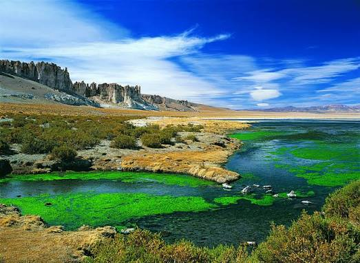
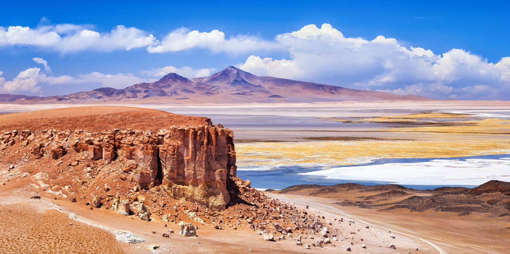

Salar de Tara
Región: Antofagasta
Comuna: San Pedro de Atacama
Tipo: Reserva nacional
Declaración: 1996
Estado: Protegido
Ubicado en la Reserva Nacional Los Flamencos, en la Región de Antofagasta, este lugar ofrece uno de los paisajes más impresionantes del altiplano chileno. A más de 4.000 metros sobre el nivel del mar, destaca por sus monumentales formaciones rocosas esculpidas por el viento —conocidas como las Catedrales de Tara—, sus vastas lagunas habitadas por flamencos y un ecosistema único en medio del desierto más árido del mundo.